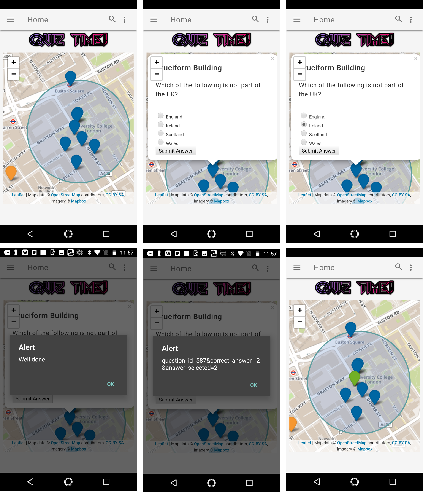

Location-Based App
Quiz App User Guide
This app is designed to play QUIZ!
Questions created by Question Setting App will be displayed on the map.
Select the correct answer from multiple choices when you move around.
Climb global ranks and have fun.
App interface:
Things you can do with this app:
- Select the answer to a multiple-choice question
- Submit your answer by clicking “Submit Answer”
- If you answer correctly, “Well done” pops up. The question icon turns green.
- If you answer wrong, “Better luck next” pops up. The question icon turns red.
- You will see the correct answer to that question.
- You will be told the number of questions you have already answered correctly.

UCL will appear in the middle of the map when you click “Relocate to UCL”.
3. Show quiz points created by you
Existing quiz points that you have created will be displayed on the map when you click “Show My Quiz Points”.
4. Remove quiz points you created by you
Existing quiz points that you have created will be removed from the map when you click “Remove My Quiz Points”.
5. Show the closest quiz point
The closest quiz question pops up when you click “Closest Quiz Point to Me”.
6. Show the number of questions you have answered correctly
The number of questions you have answered correctly will pop up when you click “How Many Questions Have I Answered Correctly”.
Your ranking in comparison to all other users pops up when you click “My Ranking”.
Port ID of top five scorers will be displayed as a bar chart when you click “Top Five Scorers”.
9. Show last five questions you answered
The last five questions you answered will be displayed on the map. Red represents you answered the question wrong, green represents you answered the question correctly.